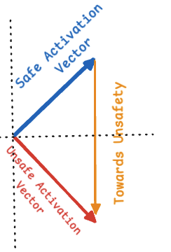
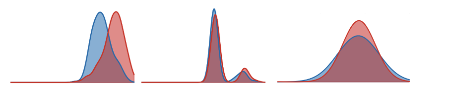
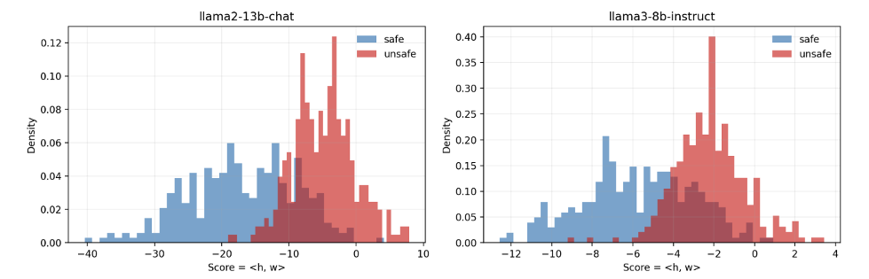
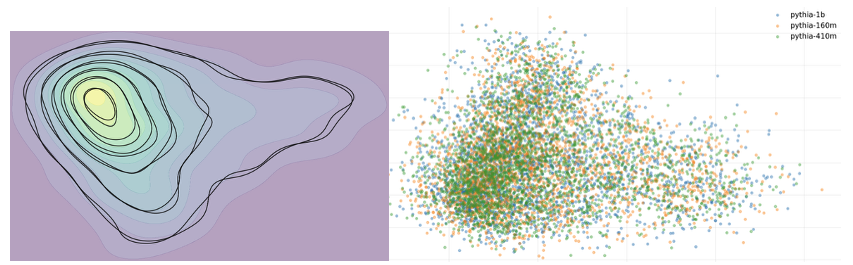
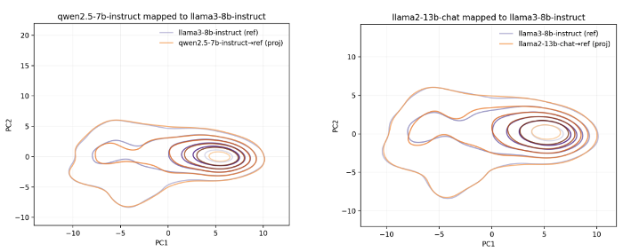
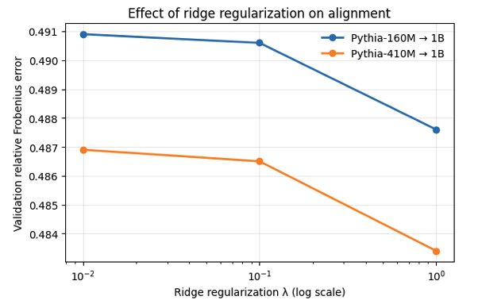
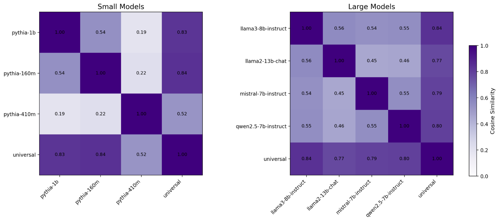
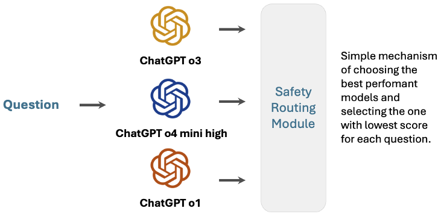
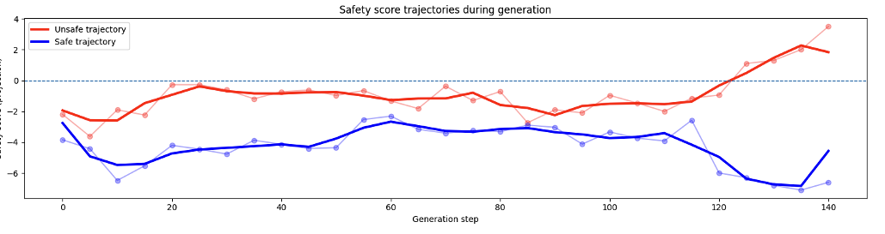

Do Language Models Share Unsafe Directions in Activation Space?
Testing whether a single safety axis emerges across models after aligning their activations into a shared space.
Executive Summary

The work asks whether safety-related representations line up across models. Safety vectors are extracted per model, aligned into a reference activation space, and combined to reveal a dominant “universal” safety direction.
After alignment, the universal vector closely matches native safety vectors (cosine similarity ≈0.72 on average) and separates safe vs. unsafe activations with AUROC comparable to or better than model-specific directions, especially for smaller models.
The approach can score relative safety across models and shows a coherent generation-time signal, but it does not yield a universal decision threshold and can break when alignment regimes differ.
High-Level Takeaways
- Safety directions are extracted from Pythia 160M/410M/1B and larger aligned models (LLaMA 2 13B, LLaMA 3 8B, Mistral 7B, Qwen2.5-7B) using 300 safe and 300 unsafe prompts.
- An alignment matrix, learned on benign Alpaca instructions, maps activations into a shared reference space, enabling cross-model comparison.
- Aligned safety vectors cluster: cosine similarity with the universal vector averages around 0.72, indicating a shared axis.
- The universal vector matches or beats native vectors on AUROC, notably improving weaker directions in smaller models.
- No global safety threshold emerged; projection scores require per-model calibration.
- During decoding, unsafe generations show rising projection scores while safe ones stay lower and steadier.
- The shared axis could support routing across models by picking the response with the safest projection.
- Potential for standardized interventions exists, but it remains untested beyond preliminary sketches.
Detailed Methodology and Analysis
2.1 Identifying individual safety vectors
Using 600 prompts from SalKhan12/prompt-safety-dataset (balanced safe/unsafe), safety directions are built per model by averaging hidden states over the final five tokens, then subtracting safe from unsafe means to obtain an unsafe direction.


Smaller models reveal noisier separation, motivating a shared direction to stabilize safety cues. Including both LLaMA 2 and LLaMA 3 tests whether the idea holds across alignment strategies as well as scale.
2.2 Identifying alignment matrices
For each family, a reference model is chosen (Pythia-1B for smaller models, LLaMA3-8B-Instruct for larger ones). A linear alignment matrix, learned with ridge regression on 3,000 Alpaca instructions, maps each model’s activations into its reference space.



Alignment uses only benign data; safety labels are not involved. Each model ends up with a matrix that projects its safety vector into the reference space.
2.3 Safety vectors represented together
Projected safety vectors are collected in the reference space and decomposed with SVD to obtain a universal safety vector for each model group.

- Similarity with the reference model direction stays positive, mostly above 0.5, confirming projection preserves orientation.
- Similarity with the universal vector averages about 0.72, indicating a shared low-dimensional axis across models.
2.4 Separating safe vs unsafe activations using the universal axis
AUROC is measured by projecting activations onto each model’s native direction and onto the universal direction.
| Model | AUROC (native) | AUROC (universal) |
|---|---|---|
| Pythia-160M | 0.7109 | 0.6984 |
| Pythia-410M | 0.6600 | 0.7376 |
| Pythia-1B | 0.7971 | 0.7714 |
| Model | AUROC (native) | AUROC (universal) |
|---|---|---|
| LLaMA3-8B-Instruct | 0.8607 | 0.7969 |
| Mistral-7B-Instruct | 0.6758 | 0.7911 |
| Qwen2.5-7B-Instruct | 0.8655 | 0.8190 |
| LLaMA2-13B-Chat | 0.8508 | 0.2347 |
Universal projections match or exceed native directions overall, with clear gains for Pythia-410M and Mistral-7B. LLaMA2-13B-Chat is a counterexample where alignment strategy differences hurt semantic separation despite high cosine similarity.
No single decision threshold transfers across models; calibration remains model-specific, making the universal axis better for relative comparisons or controlled analysis than for absolute classification.
Preliminary implications: relative safety comparison, routing, and control
Projecting responses from multiple models onto the shared axis enables routing based on relative safety scores rather than model-specific thresholds.

Generation-time signal
Tracking projection scores during decoding shows unsafe generations drifting upward while safe ones stay lower, hinting at a usable control signal during generation.

Preliminary exploration of intervention
Early tests injected the universal vector during generation as a possible intervention; results were inconclusive but motivate future controlled experiments.
Limitations
- No universal safety threshold emerged; scores must be calibrated per model.
- Effectiveness likely depends on coverage across architectures and alignment methods; current pool is limited.
- Differences between alignment regimes (for example LLaMA2 vs. LLaMA3) can break semantic transfer.
- Alignment matrices use a simple closed-form solution; gradient-based learning on larger data may yield stronger projections.